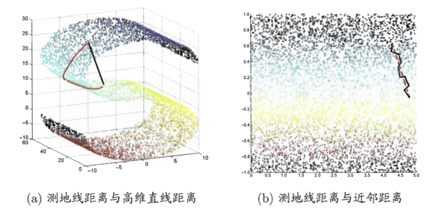

降维算法之Isomap¶
Isomap通过改造一种原本试用于欧式空间的算法MDS，达到降维的目的。MDS算法的目的是使降维后的点，两两之间的距离不变，即降维空间和原始空间中对应的两点之间距离要差不多，但MDS是针对欧式空间用欧氏距离计算的，如果一个数据分布在一个流形上欧氏距离则不适用了。
流形学习¶
流形学习是一类借鉴拓扑流形概念的降维方法。"流形"是在局部与欧式空间同胚的空间。换言之，它在局部具有欧式空间的性质，能用欧氏距离来进行距离计算。这给降维方法的带来了很大的启发：若低维流行嵌入到高维空间中，则数据样本在高维空间的分布虽然看上去很复杂，但在局部仍具有欧式空间的性质。因此，可以容易地在局部建立降维映射关系，然后在设法将局部映射关系推广到全局。
MDS算法原理¶
假定m个样本在原始空间的距离矩阵为D\in \mathbb{R}^{m\times m}，其第i行和第j列的元素dist_{ij}为样本x^{(i)}和样本x^{(j)}的距离。现在目标是获得样本在d^{'}维空间的表示Z \in \mathbb{R}^{d^{'} \times m} ，且d^{'}\le d 任意两个样本在d^{'}维空间中的欧式距离等于原始空间的距离，即||z_i-z_j||=dist_{ij}。
令B=Z^T Z\in \mathbb{R}^{m\times m}，其中B为降维后样本的内积矩阵，b_{ij}=z_i^T z_j，则有
由式(1)可以得到：
为了计算方便，首先会对数据进行中性化，即\sum_{i=1}^m z_i = 0，即
于是有
同理可以得到\sum_{j=1}^m b_{ij}=0，则有：
其中tr(B)=\sum_{i=1}^{d^{'}}b_{ii}则式(7)可以得到
下面定义几个符号：
利用式(9)和式(11)得到
进一步，对式(5)和式(6)
将式(13)(14)带入式(2)可以得到：
通过式(15)就可以得到降维后的矩阵B的各元素。
对矩阵B做特征值分解，B=V\Lambda V^T，其中\Lambda=diag(\lambda_1,\lambda_2,...,\lambda_d)为特征值构成的对角矩阵\lambda_1\ge \lambda_2\ge...\ge \lambda_d，V为特征向量矩阵。假定其中有d^*个非零特征值，构成对角矩阵\Lambda_*=diag(\lambda_1,\lambda_2,...,\lambda_d) 令V_*表示相应的特征向量矩阵，则Z可表达为
在实际应用中为了有效降维，往往仅需降维后的距离和原始空间中的距离尽可能接近，而不必严格相等。此时可取d^{'}\le d个最大特征值构成对角矩阵\hat{\Lambda}=diag(\lambda_1,\lambda_2,...,\lambda_{d^{'}})，令\hat{V} 表示相应的特征向量矩阵，则Z表达为
MDS算法流程如下：
输入：距离矩阵D\in \mathbb{R}^{m\times m}，低维空间维数d^{'}
输出：降维后的矩阵
(1)计算
\begin{aligned} dist_{i\cdot}^2&=\frac{1}{m}\sum_{j=1}^m dist_{ij}^2\\ dist_{\cdot j}^2&=\frac{1}{m}\sum_{i=1}^m dist_{ij}^2\\ dist_{\cdot \cdot}^2&=\frac{1}{m^2}\sum_{i=1}^m\sum_{j=1}^m dist_{ij}^2\\ \end{aligned}(2)计算矩阵B，矩阵中每个元素b_{ij}
b_{ij}=\frac{1}{2}(dist_{i\cdot}^2+dist_{\cdot j}^2-dist_{\cdot \cdot}^2-dist_{ij}^2)\notag(3)对矩阵B做特征值分解B=V\Lambda V^T，取\hat{\Lambda}为d^{'}个最大特征值所构成的对角矩阵，\hat{V}为对应的特征向量矩阵
(4)矩阵\hat{V}\hat{\Lambda}^{1/2} \in \mathbb{R}^{m \times d^{'}}，每行是一个样本的降为坐标
Isomap算法原理¶
等度量映射(Isometric Mapping，简称Isomap)的基本出发点，是认为低维流形嵌入到高维空间之后，直接在高维空间中计算直线距离具有误导性，因为高维空间中的直线距离在低维嵌入流形上是不可达的，直接在高维空间中计算直线距离是不恰当的。
可利用流形在局部上与欧式空间同胚的这个性质，对每个点基于欧式距离找出其紧邻点，然后建立一个近邻连接图，图中近邻点之间存在连接，而非近邻点之间不存在连接。于是计算两点之间的距离，就可以转变为计算近邻连接图上两点之间的最短距离问题。

在近邻连接图上计算两点之间的最短距离，可采用Dijkstra算法或Floyd算法，在得到任意两点的距离之后，就可以直接采用MDS方法来获得样本点在低维空间中的坐标。所以Isomap算法的流程：
输入：样本集D=\{x^{(1)},x^{(2)},..,x^{(m)}\}，近邻参数k，低维空间维数d^{'}
输出：样本集D在低维空间的投影Z=\{z_1,z_2,...,z_m\}
(1)对i=1,2,...,m有：
①确定x^{(i)}的k近邻；
②x^{(i)}与k近邻点之间的距离设置为欧氏距离，与其他点的距离设置为无穷大
(2)调用最短路算法计算任意两个样本之间的距离dist_{ij}
(3)将dist_{ij}作为MDS算法的输入
(4)返回MDS算法的输出